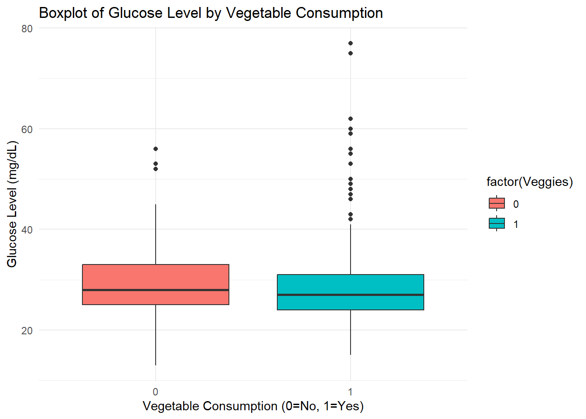
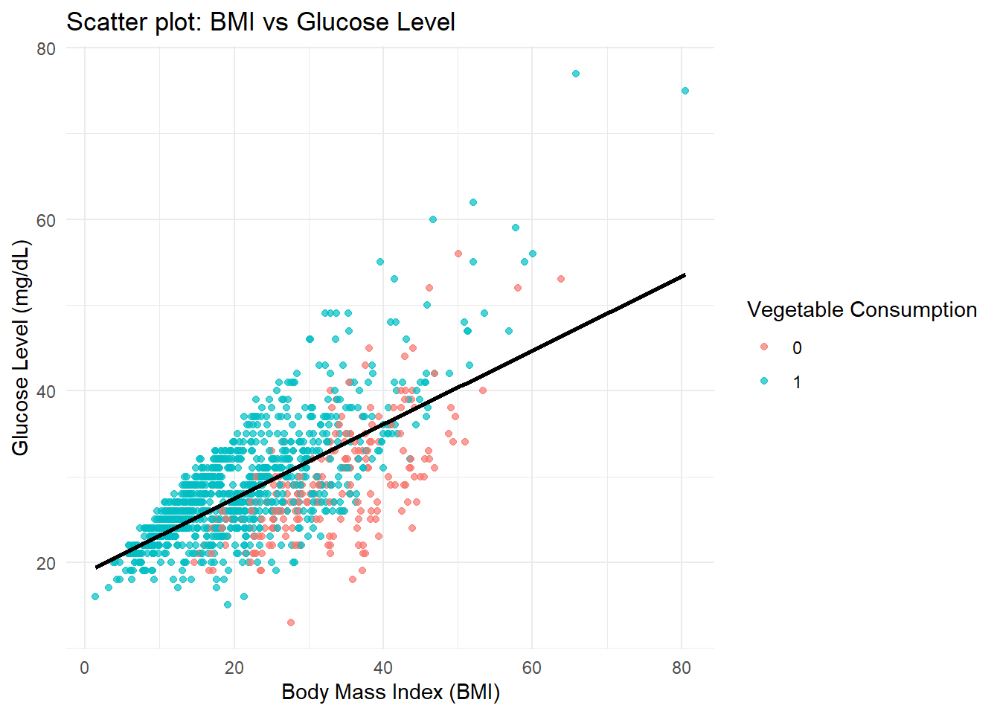

datos =read_csv("https://raw.githubusercontent.com/Cruzalirio/Unal-Enfermeria-/main/Datos/diabetes_BRFSS2015.csv")
Rows: 253680 Columns: 32
── Column specification ────────────────────────────────────────────────────────
Delimiter: ","
dbl (32): Diabetes_012, HighBP, HighChol, CholCheck, BMI, Smoker, Stroke, He...
ℹ Use `spec()` to retrieve the full column specification for this data.
ℹ Specify the column types or set `show_col_types = FALSE` to quiet this message.
### La función head me pe ver las primeras filashead(datos)
## Vamos a seleccionar una muestra de tamaño 10000data <- datos %>%sample_n(size=10000)ggplot(datos, aes(x = Antioxidant_Intake, y =Nutritional_Score, color =factor(Veggies))) +geom_point(alpha =0.7, size =2) +scale_color_manual(values =c("#56B4E9", "#009E73"), labels =c("No Veggies", "Consumes Veggies")) +theme_minimal(base_size =14) +theme(plot.title =element_text(face ="bold", hjust =0.5))
Warning: Removed 24776 rows containing missing values or values outside the scale range
(`geom_point()`).
7.0.2 Correlation coefficient
Interpretation:
- The Pearson correlation coefficient (r) quantifies the linear association between two variables.
- A positive value indicates that higher values of \(X\) is associated with higher values of \(Y\).
`summarise()` has grouped output by 'Diabetes_012', 'HighBP', 'HighChol',
'CholCheck', 'Smoker', 'Stroke', 'HeartDiseaseorAttack', 'PhysActivity',
'Fruits', 'Veggies', 'HvyAlcoholConsump', 'AnyHealthcare', 'NoDocbcCost'. You
can override using the `.groups` argument.
Load the dataset and select a random sample of 2000 observations.
Report how many complete cases remain after removing missing values.
Briefly describe the selected variables (include at least one biomedical quantitative variable).
library(tidyverse)library(corrplot)# Example loading (adjust to your local path)# data <- read.csv("diabetes_BRFSS2015.csv")# Example simulated data (for illustration)datos =read_csv("https://raw.githubusercontent.com/Cruzalirio/Unal-Enfermeria-/main/Datos/diabetes_BRFSS2015.csv")sample_data <- datos %>%sample_n(2000) %>%na.omit()
** 2. Boxplot Analysis (2.5 points)
Create a boxplot comparing a biomedical variable by a categorical variable (e.g., Veggies, PhysicalActivity).
Comment on whether the distributions differ between groups and what that might imply biologically.
ggplot(sample_data, aes(x =factor(Veggies), y = BMI, fill =factor(Veggies))) +geom_boxplot() +labs(x ="Vegetable Consumption (0=No, 1=Yes)",y ="Glucose Level (mg/dL)",title ="Boxplot of Glucose Level by Vegetable Consumption") +theme_minimal()

** *3. Scatter Plot (2.5 points)**
Make a scatter plot between two quantitative biomedical variables.
Discuss whether the relationship seems linear and if it has biological relevance
ggplot(sample_data, aes(x = Inflammatory_Index, y = BMI, color =factor(Veggies))) +geom_point(alpha =0.7) +geom_smooth(method ="lm", se =FALSE, color ="black") +labs(title ="Scatter plot: BMI vs Glucose Level",x ="Body Mass Index (BMI)",y ="Glucose Level (mg/dL)",color ="Vegetable Consumption") +theme_minimal()
`geom_smooth()` using formula = 'y ~ x'

** 4. Other Graphs (2.5 points)
Select a plot between the following that you should replicate with the sample data as part of your report